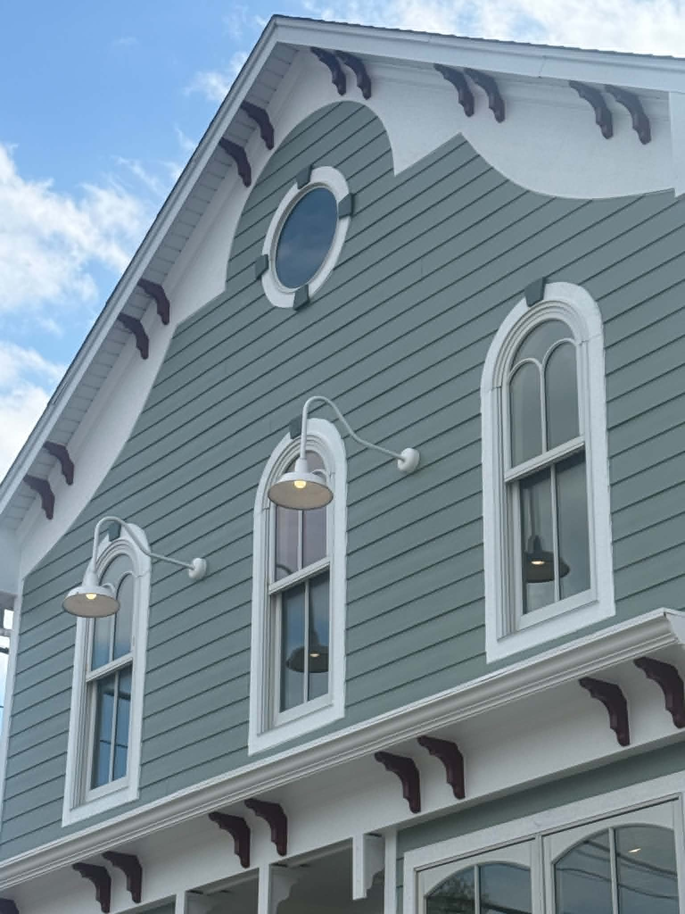

Interior Painting
Interior painting for Oakland Township homes, from single-room updates to full-house repaints.
View our interior painting servicesOakland Township is where we're based, and it's the community we know best — interior, exterior, residential, and commercial painting for township homes on every kind of lot, from smaller subdivisions to larger standalone properties.

As a township rather than a dense city, Oakland Township has a wider range of lot sizes and home styles than a typical suburb, and often more exterior square footage per property. We scope each job on its own during the walkthrough, and because this is our home base, scheduling flexibility here tends to be a little easier than it is further out.
We provide Oakland Township painting services with a local touch, premium prep, and finish standards built for this community.
Interior painting for Oakland Township homes, from single-room updates to full-house repaints.
View our interior painting servicesExterior painting scoped for the township's larger lots, with coverage planned around each property's full footprint.
Learn about our exterior painting processResidential painting for Oakland Township properties of every size, handled by our home-base crew.
See how we approach residential paintingCommercial painting for offices and professional spaces in and around Oakland Township.
See our commercial painting servicesOakland Township is our home base, which means most projects here don't involve much drive time, and scheduling tends to have a bit more flexibility as a result. The township's mix of subdivisions and larger standalone lots means property size varies more than in a typical dense suburb, so we walk the full lot during the estimate — house, and any additional structures — rather than pricing from a flat assumption. Being local also means if something needs a follow-up visit after the job is done, that's a short trip, not a scheduling hassle.
Yes. Since this is our home base, scheduling an estimate in Oakland Township is often easier to fit in quickly.
Yes. We handle interior, exterior, residential, and commercial painting throughout Oakland Township and nearby Rochester Hills, Rochester, and Lake Orion.
Yes. Tim MacDonough Painting Company is fully licensed and insured, based right here in Oakland Township.
It depends on the home — square footage, ceiling heights, the number of rooms or elevations, and how much prep the surfaces need all change the price, so we don't quote flat numbers sight unseen. We'll walk your Oakland Township property with you and follow up with a free, itemized written estimate so you know exactly what's included.
Yes. Many Oakland Township properties have more than one structure, and we include detached garages and outbuildings in the walkthrough so they can be scoped and priced alongside the house.
Michigan's exterior painting season generally runs from late spring through early fall, when temperatures and humidity let coatings cure properly. Those months book up, so reaching out in winter or early spring gives you the most scheduling options. Interior painting can be done year-round.
The same owner-led crew and the same prep standard travel with us to the communities around Oakland Township. Explore our local painting pages below, or see every community we serve across Metro Detroit.
Reviews from homeowners, posted on our Google Business Profile.
We hired tim and his team to paint the exterior of our home. The entire crew did a great job. They were quick and efficient. Our home looks brand new. Thank you for the great job.
Tim MacDonough Painting always does a great job at painting my home. We have been using them for years and recommend them to everyone.
Read every review on our Google Business Profile, or see what Tim can do for your home.
Read our Google reviews Request a Free EstimateWhen your Oakland Township home or business needs painting, we show up prepared, courteous, and ready to protect your property.